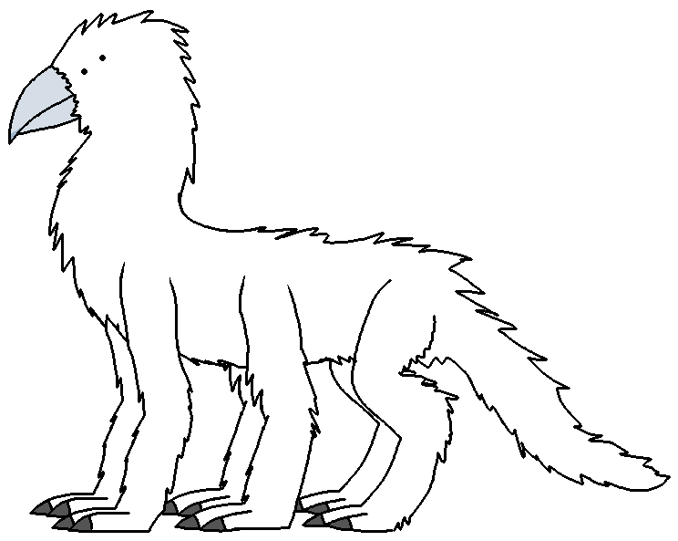

link to this page
Tarici

Tarici are a majority species in the Stareater Expanse, and relative to humans are an example of naturally evolved sapient xenobiota. Despite having been found in an extinct state, their fast reproduction led to their population numbers quickly overtaking those of the many human species across the Stareater Expanse.
The history of the species is complicated but quite short, the most major event being a nuclear war on their homeworld, the following nuclear winter long enough for tarici to have undergone significant evolutionary changes such as growing fur, and a permanent ice age resulting from the nuclear winter pushing the planet past a climate tipping point, after which the species had largely gone extinct, leaving behind only descendant species that lost their intelligence due to the new evolutionary pressures.
Tarici only became spaceborne after hyperintellect de-extinction efforts reconstructed the species from records of the ruined civilization and analysis of their unintelligent evolutionary descendants. Their extinct civilization is known to have had a space program and even gone so far as to leave marks on other planetary bodies of their system, but the imperfect conditions made it so that flame of intelligence went out before it had the chance to spread.
emotional palette
- tarici anger and fear are close enough in function and reported subjective experience that between tarici and human languages they can be translated directly without appearing awfully out of place at least most of the time.
- Qipis is a state of predatory readiness for attack or defense, which encourages focus but is not by itself a targeted emotion in a way that anger or fear may be targeted at something or someone. It is also a high-energy state, causing muscles to maintain some residual tension and keeping the fight-or-flight circuits primed but not active. It should not be mistaken for fear or anger, it is as similar to them as disgust is, (especially in terms of how the emotion feels subjectively - despite the similarities it feels completely distinct from the other two to the tarici experiencing it), and unlike them it is an emotion specially tuned by tarici evolution to enable them staying in this state for very lengthy periods of time without significant exhaustion. It should also not be mistaken for strog which, among other differences, is a strongly targeted emotion. Quipis is also not inherently unpleasant, but known to be one of the mechanisms by which tarici often experience severe sleep deprivation, and as such various individuals may develop their own dislike towards it, especially in multispecies environments where they are surrounded by unnatural noise.